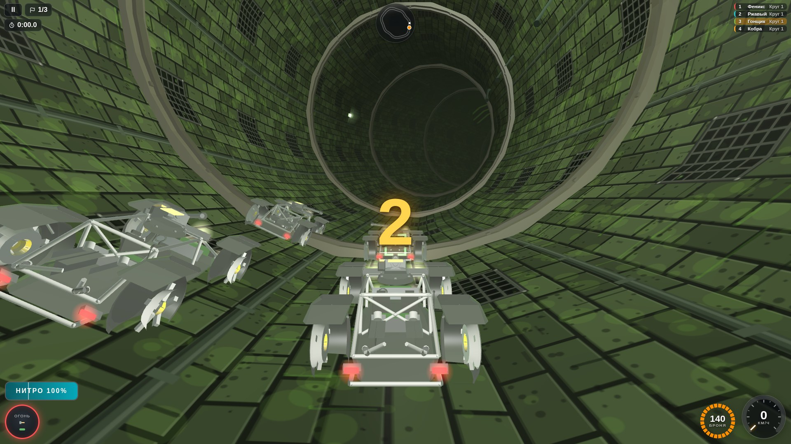
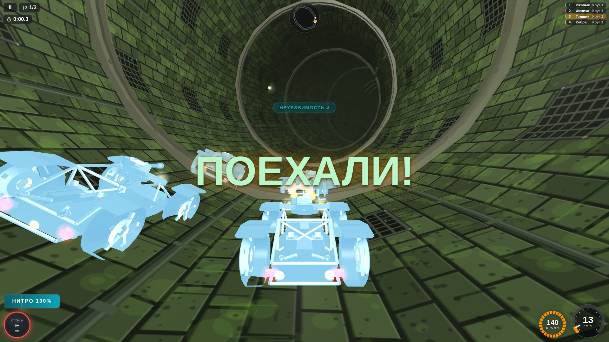
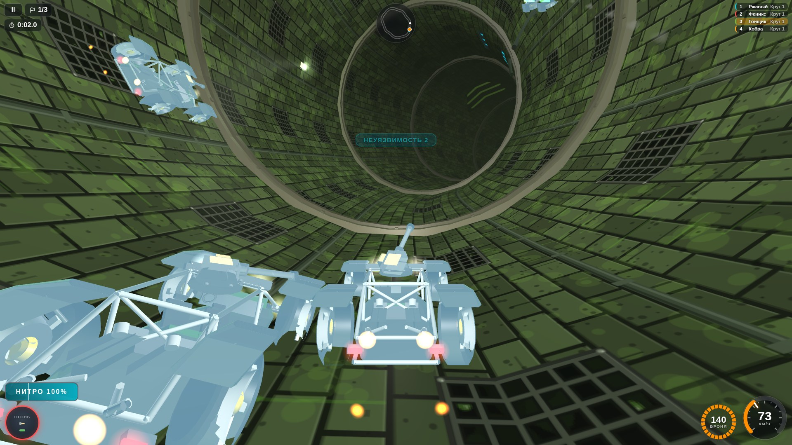
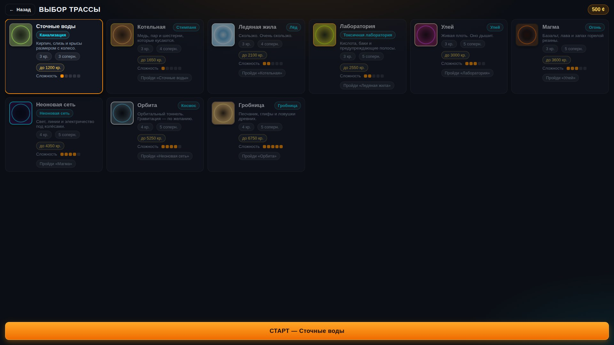
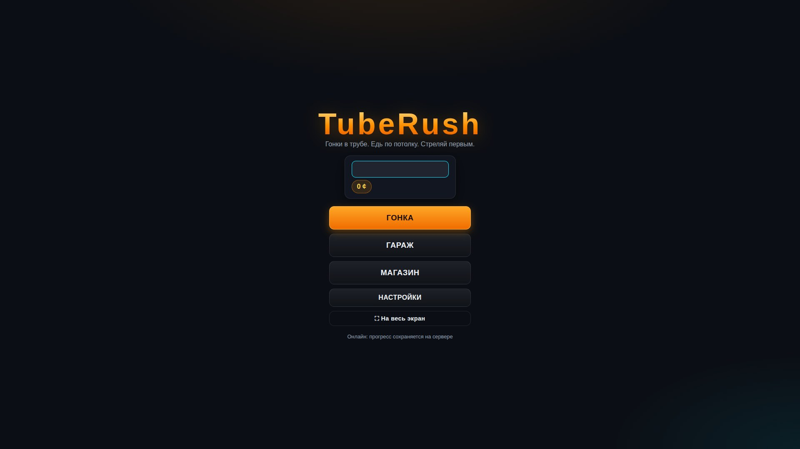
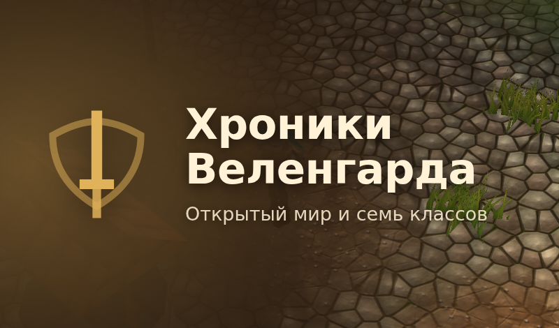
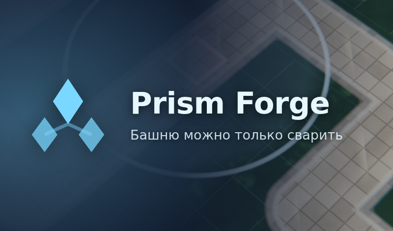

Скриншоты




Об игре
Аркадные гонки внутри гигантской трубы. Трасса — замкнутая петля, и ехать по ней можно на все 360°: по полу, по стене, по потолку. Трамплин выбрасывает машину к оси трубы, а гравитация тянет к ближайшей стенке — сильный прыжок перебрасывает через ось, и приземляешься вверх ногами.
Что внутри: • девять тем трасс — канализация, стимпанк, лёд, токсичная лаборатория, улей, лава, неон, космос и гробница, у каждой свои сцепление и гравитация; • шесть корпусов машин и восемь видов автонаводящихся турелей: пулемёты, дробовик, ракеты, мины, плазма, лазер, рельсотрон; • гараж с 3D-стендом — машина крутится на подиуме, турели появляются на модели сразу, рядом окраска и схема установки; • препятствия, которые надо читать: слалом из труб, перекладины через всю трубу, вращающиеся булавы и коридоры, которые тащат машину вбок; • бустеры на потолке — чтобы кататься по стенам было выгодно.
Как играть
Правый палец — виртуальный стик: влево-вправо руль (машина едет по окружности трубы), вниз — тормоз. Газ автоматический, его можно отключить в настройках. Левый палец — кнопки двух групп оружия и нитро.
Кнопка группы загорается красным, когда у её турелей есть цель: стрелять впустую невредно только пулемётам — они греются, а у ракет и рельсотрона боезапас конечный.
На клавиатуре: A/D — руль, W/S — газ и тормоз, пробел и K — группы оружия, N — нитро.
За гонку платят кредитами: в гараже на них ставят турели и качают двигатель, броню, покрышки и нитро, в магазине покупают новые корпуса. Трассы открываются по очереди.
Другие игры автора
 71
71
 58
58
 66
66
 61
61
 69
69
 62
62

67
65